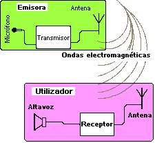

Invención de la radio

Musica de radio antigua
Funcionamiento
En la radio, es de especial importancia el descubrimiento de la propagación de ondas electromagnéticas formulado por James Maxwell en 1873, donde se descubrió que los campos eléctricos generan campos magnéticos y viceversa.
Relación entre el campo eléctrico y el campo magnético[2].
Una radio funciona con dos circuitos, uno de emisión que consta de microfono, transmisor, el cual amplifica la señal a una frecuencia dada y antena, mientras que en la recepción se cuenta con una antena, un receptor que selecciona una frecuencia determinada y la amplificá para reproducir en un altavoz.
Receptor y emisor de ondas[3].
Clic aqui para mas informacion